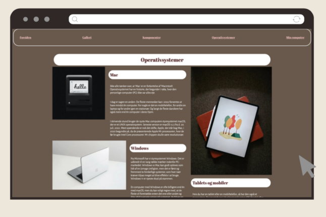
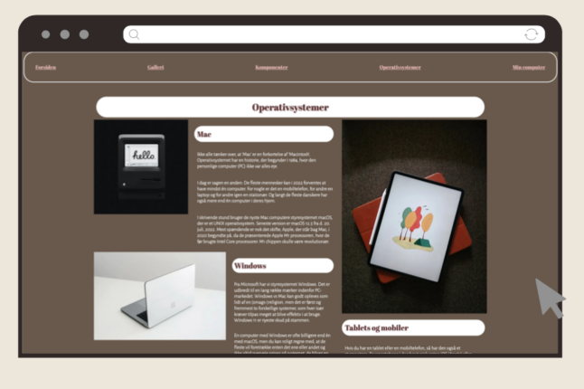

Tema 2
Grundlæggende Web
02.01.02 Website - Studiestartsprøven
I Tema 2 er vi blevet introduceret til samspillet mellem HTML- og CSS-kodning til struktur og styling, samt visuelt design og designprincipper som kompositioner, stilarter, gestaltlove og kontraster. Også VS Code blev introduceret som et værktøj i denne sammenhæng.
Projektet i Tema 2 bestod af videreudvikling af et mobilsite, som skulle tilpasses desktop. Dette projekt fungerede også som studiestartsprøve på uddannelsen. Vi modtog wireframes og layoutdiagrammer for at visualisere sitets struktur, og det blev opbygget med Grids, Flexbox og Media-queries for at sikre responsivitet.
Mit valg af design omfattede en mørk baggrundsfarve for at tilføre dybde. Jeg implementerede to forskellige fonte, både en Serif og en sans-Serif, for at skabe en kontrast i udtrykket. Under projektet stødte jeg på udfordringer ved opbygningen med grids, da det krævede nøje overvejelse af den semantiske struktur og placering af HTML-elementerne. Trods udfordringerne lykkedes det mig at skabe det ønskede resultat.
 
